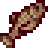
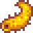
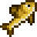

Stardew Valley
Peixes do Inverno
| Peixe | Nome | Horário | Clima | Local | Normal | Silver | Gold | Iridium |
|---|---|---|---|---|---|---|---|---|

|
Albacora (Albacore) | 6:00 as 11:00 18:00 as 2:00 | Qualquer | Oceano | 75g | 93g | 112g | 150g |

|
Arenque (Herring) | Qualquer | Qualquer | Oceano | 30g | 37g | 45g | 60g |

|
Atum (Tuna) | 6:00 as 19:00 | Qualquer | Oceano | 100g | 125g | 150g | 200g |

|
Carpa da meia-noite (Midnight carp) | 22:00 as 2:00 | Qualquer |
Lago da montanha
Lago da floresta Ilha Gengibre |
150g | 187g | 225g | 300g |

|
Cioba (Red snapper) | 6:00 as 19:00 | Chuva | Oceano | 50g | 62g | 75g | 100g |

|
Esturjão (Sturgeon) | 6:00 as 19:00 | Qualquer | Lago da montanha | 200g | 250g | 300g | 400g |

|
Halibute (Halibut) | 6:00 as 11:00 19:00 as 2:00 | Qualquer | Oceano | 80g | 100g | 120g | 160g |

|
Lúcio (Pike) | Qualquer | Qualquer |
Cidade
Floresta Lago da Floresta |
100g | 125g | 150g | 200g |

|
Lula (Squid) | 18:00 as 2:00 | Qualquer | Oceano | 80g | 100g | 120g | 160g |
|  | Ófis (Lingcod) | Qualquer | Qualquer |
Cidade
Floresta Lago da montanha |
120g | 150g | 180g | 240g |

|
Peixe-gelo (Glacierfish) | Qualquer | Qualquer | Floresta Cinzaseiva | 1000g | 1250g | 1500g | 2000g |
|  | Pepino-do-mar (Sea cucumber) | 6:00 as 19:00 | Qualquer | Oceano | 75g | 93g | 112g | 150g |
|  | Perca (Perch) | Qualquer | Qualquer |
Cidade
Floresta Lago da floresta Lago da montanha |
55g | 68g | 82g | 110g |

|
Salmão híbrido (Tiger trout) | 6:00 as 19:00 | Qualquer |
Cidade
Floresta |
150g | 187g | 225g | 300g |

|
Salmonete (Red mullet) | 6:00 as 19:00 | Qualquer | Oceano | 75g | 93g | 112g | 150g |

|
Sardinha (Sardine) | 6:00 as 19:00 | Qualquer | Oceano | 40g | 50g | 60g | 80g |